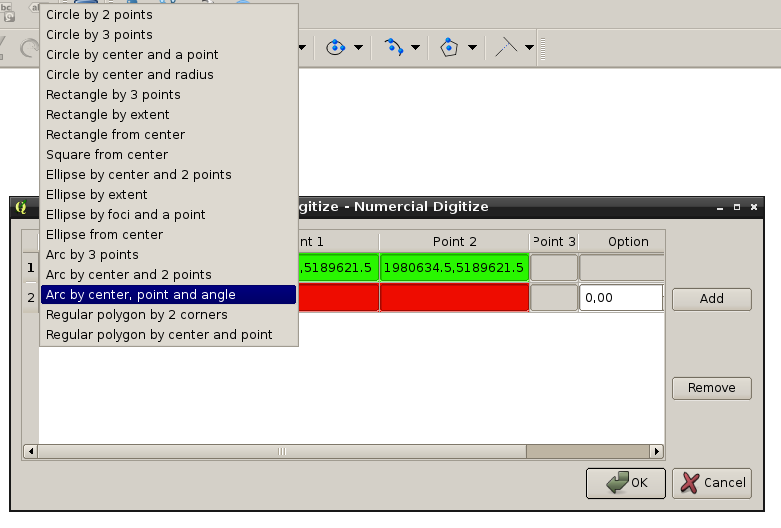

Numerical Digitize¶
Numerical Digitize (ND) provide a table where you can directly input coordinates to produce geometry.
For developper: You can import tools from python and play with.
Example:
>> from CADDigitize.CADShape.CADCircle import CADCircle
>> my_circle = CADCircle.by2Points(QgsPoint(0, 0), QgsPoint(0, 5))
>> my_circle
CADCircle(CADPoint(0.000, 2.500), 2.5)
>> print(my_circle)
Circle:
Center: CADPoint(0.000, 2.500)
Radius: 2.500
Area: 19.635
Perimeter: 15.708
>> my_geom = my_circle.exportToQgsGeometry()
>> my_geom.exportToWkt(3)
u'Polygon ((2.5 2.5, 2.462 2.934, 2.349 3.355, 2.165 3.75, 1.915 4.107, 1.607 4.415, 1.25 4.665, 0.855 4.849, 0.434 4.962, 0 5, -0.434 4.962, -0.855 4.849, -1.25 4.665, -1.607 4.415, -1.915 4.107, -2.165 3.75, -2.349 3.355, -2.462 2.934, -2.5 2.5, -2.462 2.066, -2.349 1.645, -2.165 1.25, -1.915 0.893, -1.607 0.585, -1.25 0.335, -0.855 0.151, -0.434 0.038, -0 0, 0.434 0.038, 0.855 0.151, 1.25 0.335, 1.607 0.585, 1.915 0.893, 2.165 1.25, 2.349 1.645, 2.462 2.066, 2.5 2.5))'
>> my_circle.exportToQgsGeometry(4).exportToWkt(2)
u'Polygon ((2.5 2.5, 0 5, -2.5 2.5, -0 0, 2.5 2.5))'